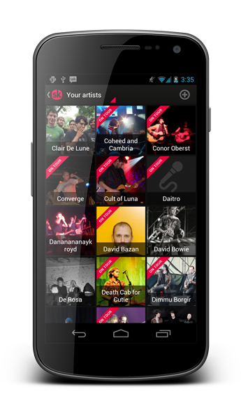

ImageLoader is a simple library to help you download, display and cache images in your Android apps.
Download the latest jar (v 1.5.5) or include the dependency in your Maven configuration:
<repositories>
<repository>
<id>public-mvn-repo-releases</id>
<url>https://github.com/novoda/public-mvn-repo/raw/master/releases</url>
</repository>
</repositories>
<dependency>
<groupId>com.novoda.imageloader</groupId>
<artifactId>imageloader-core</artifactId>
<version>1.5.5</version>
</dependency>
Check out the project documentation to learn how to use the library in your apps. There is also an issue tracker if you find any bugs or want to suggest new features.
